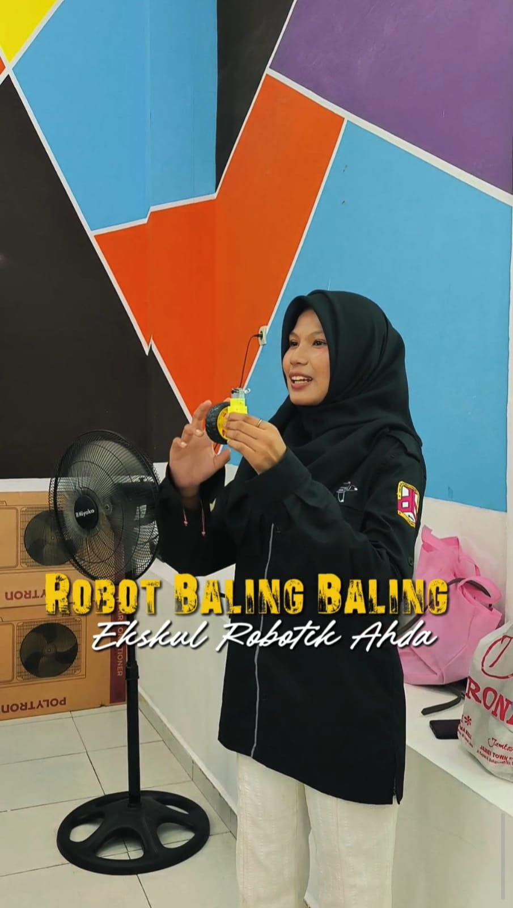

WHO AM I

Mengajar
Dibangun
Saya Imas Susilawati, Mahasiswi semester 5 jurusan sistem komputer dan senang membangun hal-hal berbasis teknologi — dari kode, sistem, hingga robotika dan jaringan. Saat ini saya bekerja sebagai IT & Networking Instructor di PT. Kreasi Zetr Teknologi, sekaligus membina ekstrakurikuler robotika untuk siswa SMP dan memimpin Divisi Metrolap di UKM Robotik kampus. Di samping itu, saya juga menerima proyek freelance pembuatan website, sistem, hingga alat atau robot.
Saya juga aktif mengikuti berbagai organisasi dan kepanitiaan di kampus, sebagai wadah untuk terus belajar berkolaborasi dan mengasah kepemimpinan di luar kelas.
Di luar dunia teknis, saya senang berkarya secara visual — melukis dan mendesain jadi cara saya menyalurkan sisi kreatif, sementara jogging jadi cara saya menjaga keseimbangan. Membuat puding dan kue ulang tahun, serta membaca buku, jadi hobi kecil yang saya nikmati di waktu senggang.
Kenal Saya Lebih JauhMY FOCUS

Saya suka mengerjakan hal-hal yang berhubungan dengan teknologi, mulai dari membangun sistem berbasis web, merakit dan menangani hardware robotika, sampai mendampingi orang lain belajar dari nol. Selain itu, saya juga sering terlibat merancang identitas visual untuk acara-acara teknologi dan aktif memimpin inisiatif di organisasi kampus.